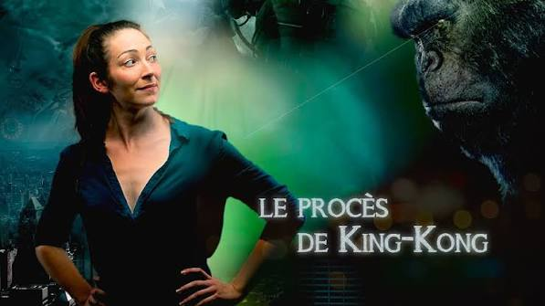

King Kong Process
An interactive theatre format designed to raise awareness about sexist and sexual violence. Through short acted scenes and guided audience interventions, participants learn to recognise inappropriate behaviour, react appropriately, and help build safer, more respectful environments.